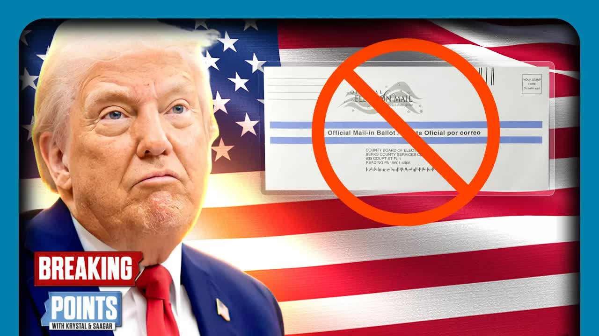

All Summaries
Features
Contact

Political Analysis
Trump Says BAN MAIL IN BALLOTS Ahead Of Midterms
Trump said he wants to eliminate mail-in ballots through an executive order before the 2026 midterms.
He claimed mail-in ballots are inherently corrupt and make real democracy impossible.
He argued the U.S. is basically the only country that uses them, which is not true.
He also attacked voting machines as inaccurate and overly expensive.
Trump said paper ballots with watermarks are the only trustworthy method.
He repeated his belief that Democrats only win because of "cheating" with mail-in voting.
After meeting with Putin, he claimed Putin told him U.S. elections are rigged due to mail voting.
Putin supposedly said Trump actually won 2020 and that war in Ukraine wouldn't have happened otherwise.
Commentators pointed out that Trump himself has voted by mail in the past.
Many countries around the world do in fact use mail-in ballots successfully.
Critics say Trump's real goal isn't changing the system but planting doubt ahead of midterm results.
Republicans historically did better in low-turnout elections, while mail-in voting raises turnout.
That makes Trump's strategy questionable from a tactical point of view.
There's concern he's setting up to claim the midterms were "rigged" if Republicans lose ground.
He even joked about canceling elections during wartime, raising worries about abuse of emergency powers.
Trump has shown off Trump 2028 campaign merchandise, hinting at staying a political force well past 2024.
Analysts think he may prefer being a "kingmaker" rather than actually serving again as president.
He has also floated the idea of a new census that excludes undocumented immigrants.
The Constitution says representation is based on the "whole number of persons," not just citizens.
Legal experts doubt such a census change could happen quickly, but the proposal fits into the larger effort to tilt the playing field.
← All Summaries
← Previous
Next →